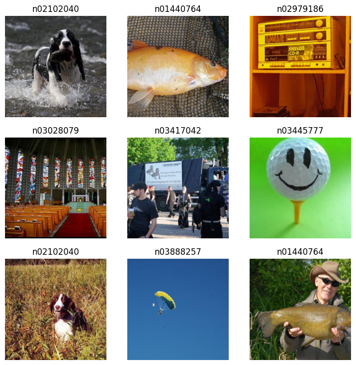
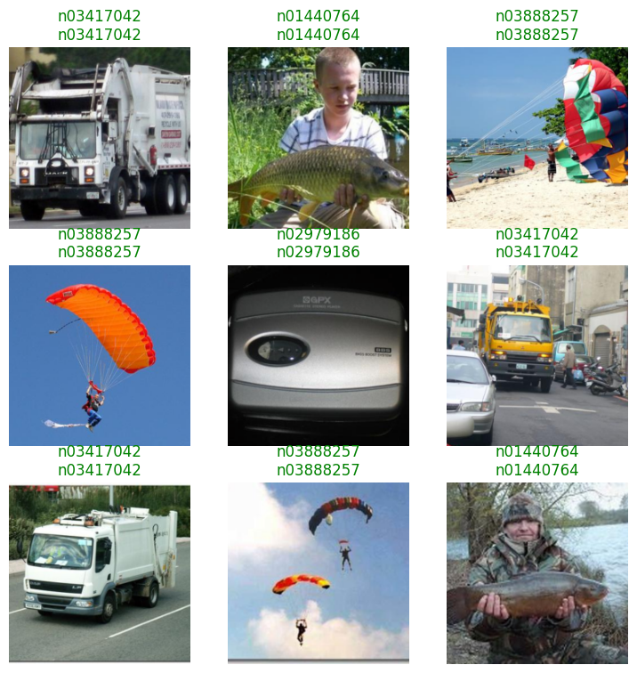
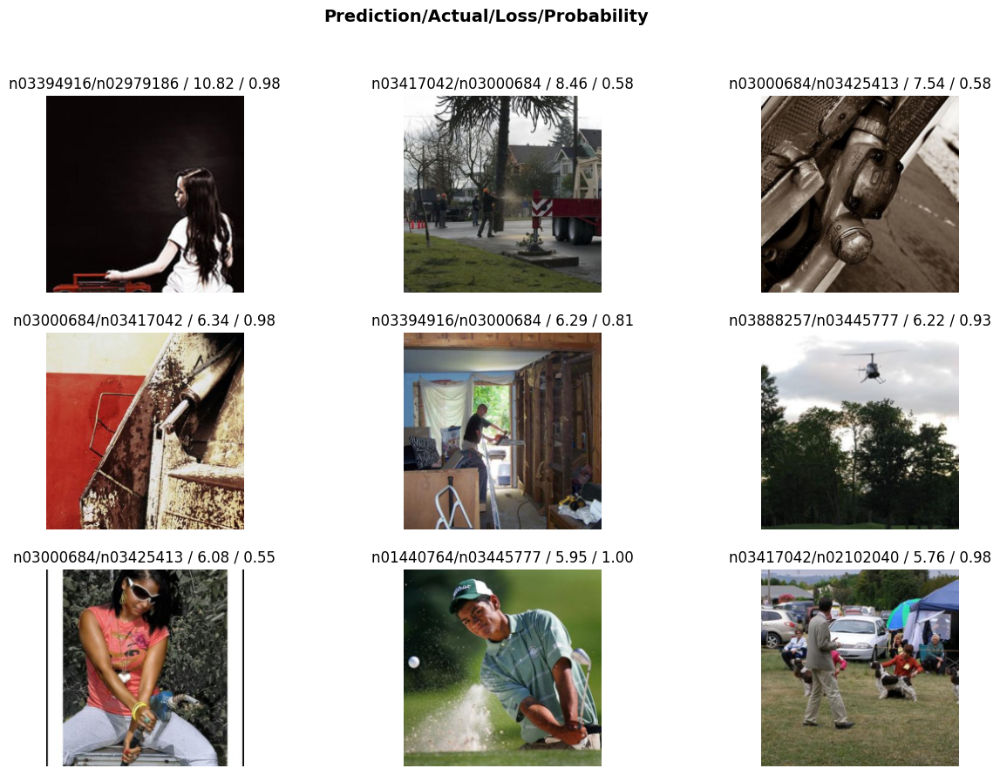

from fastai.vision.all import *ResNet18 with fastai on NVIDIA Jetson
Installation
This guide provides step-by-step instructions for setting up an NVIDIA® Jetson Orin Nano™ Developer Kit for deep learning with PyTorch, torchvision, and fastai. The setup will be performed via a terminal from a host machine connected via USB or serial connection.
Software and Package Versions
- JetPack - 6.2 (also compatible with 6.1)
- CUDA - 12.6
- Python - 3.10
- cuSPARSELt - 0.7.0
- torch - 2.5.0a0+872d972e41 (NVIDIA wheel).
- torchvision - 0.20.0 (built from source)
- spacy - 3.7.2
- fastai - 2.7.18
Tips - WIFI connection and IP address
If your Jetson device is controlled via serial connection, here are some instructions to connect to Wifi using nmcli:
- Check available WiFi networks:
nmcli device wifi list
- Connect to a WiFi network:
nmcli device wifi connect "SSID_NAME" password "YOUR_PASSWORD"
- Verify the Connection:
nmcli connection show --active
Note: If encountering unauthorized error, add sudo before these commands.
After connecting to WIFI, the user can retrieve the IP address assigned to the Jetson device. Check the active connections with the command in step 3, which should output their names, UUIDs, types, and devices. Notice the device of the WIFI (type) connection and use it with the command ip a show <DEVICE_NAME>. From another device, e.g., host machine, that also connects to this WIFI, verify the connection to Jetson by using ping on this IP address.
Step 1 - Installing JetPack and SDK Components
The Jetson device must be flashed with JetPack, which includes the Jetson Linux OS and necessary GPU computing libraries such as CUDA and cuDNN. Follow the official NVIDIA JetPack installation guide for instructions. Ensure that firmware version is updated to 36+ for JetPack > 6.
To flash Jetson Orin Nano, install NVIDIA SDK Manager on a Linux host machine and follow the setup steps. During flashing, select Jetson SDK Components to install CUDA toolkit in the second step. If CUDA is missing post-installation, follow the JetPack package management guide.
CUDA installation can be verified with:
$ nvcc --versionor
$ nvidia-smiFor additional verification, compile and run a CUDA sample:
# Clone suitable version for testing CUDA 12.6
$ git clone -b v12.5 https://github.com/NVIDIA/cuda-samples.git
$ cd cuda-samples/Samples/1_Utilities/deviceQuery
$ make
$ ./deviceQueryStep 2 - Installing PyTorch and torchvision
Jetson devices use integrated GPUs (iGPUs) while default CUDA backend of PyTorch is optimized for discrete GPUs (dGPUs). To enable PyTorch with GPU acceleration on Jetson, follow the custom installation available in NVIDIA instructions and NVIDIA forums. The supporting package torchvision also has to be built from source on the Jetson device.
Installing cuSPARSELt
For PyTorch versions 24.06+ (see Compatibility Matrix), cuSPARSELt is required. Install it with these instructions by selecting Linux OS, aarch64-jetson architecture, and Ubuntu distribution:
$ wget https://developer.download.nvidia.com/compute/cusparselt/0.7.0/local_installers/cusparselt-local-tegra-repo-ubuntu2204-0.7.0_1.0-1_arm64.deb
$ sudo dpkg -i cusparselt-local-tegra-repo-ubuntu2204-0.7.0_1.0-1_arm64.deb
$ sudo cp /var/cusparselt-local-tegra-repo-ubuntu2204-0.7.0/cusparselt-*-keyring.gpg /usr/share/keyrings/
$ sudo apt-get update
$ sudo apt-get -y install libcusparselt0 libcusparselt-devInstalling PyTorch
Create a virtual environment (recommended):
$ sudo apt-get install virtualenv
$ cd <target-directory>
$ python3 -m virtualenv -p python3 <venv-name>
$ source <venv-name>/bin/activateInstall PyTorch with a custom wheel built by NVIDIA:
- Check compatibility from NVIDIA Jetson PyTorch matrix.
- Select suitable wheel from list of released wheels by selecting
v$JP_VERSION(JetPack version) >pytorch>$PYT_VERSION ... .whl(PyTorch version).
- Install with pip -
$ pip3 install --no-cache https://developer.download.nvidia.com/compute/redist/jp/v$JP_VERSION/pytorch/$PYT_VERSION ... .whlIn this tutorial, PyTorch version 2.5 for JetPack 6.1 (still compatible with 6.2) will be installed with:
$ pip3 install --no-cache https://developer.download.nvidia.com/compute/redist/jp/v61/pytorch/torch-2.5.0a0+872d972e41.nv24.08.17622132-cp310-cp310-linux_aarch64.whlVerify with Python Terminal:
$ python3
>>> import torch
>>> print(torch.__version__)
>>> print('CUDA available: ' + str(torch.cuda.is_available()))
>>> print('cuDNN version: ' + str(torch.backends.cudnn.version()))
>>> a = torch.cuda.FloatTensor(2).zero_()
>>> print('Tensor a = ' + str(a))
>>> b = torch.randn(2).cuda()
>>> print('Tensor b = ' + str(b))
>>> c = a + b
>>> print('Tensor c = ' + str(c))Installing torchvision
torchvision must be built from source:
$ sudo apt-get install libjpeg-dev zlib1g-dev libpython3-dev libopenblas-dev libavcodec-dev libavformat-dev libswscale-dev
$ git clone --branch release/0.$VERSION https://github.com/pytorch/vision torchvision
$ cd torchvision
$ export BUILD_VERSION=0.$VERSION.0
$ python3 setup.py install --user # remove --user if installing in virtualenvIn this tutorial, torchvision version 0.20.0 is installed by replacing $VERSION with 20.
Verify with Python terminal:
$ python3
>>> import torchvision
>>> print(torchvision.__version__)Troubleshooting
Here are some known issues and tips for troubleshooting:
- If a warning about numpy version is show, downgrade to numpy with
pip install 'numpy<2'
- If you encounter this runtime error -
RuntimeError: operator torchvision::nms does not exist, follow the instructions in this NVIDIA forum post. Specifically, install the pre-compiled binaries oftorchandtorchvision:
$ pip install http://jetson.webredirect.org/jp6/cu126/+f/5cf/9ed17e35cb752/torch-2.5.0-cp310-cp310-linux_aarch64.whl#sha256=5cf9ed17e35cb7523812aeda9e7d6353c437048c5a6df1dc6617650333049092
$ pip install http://jetson.webredirect.org/jp6/cu126/+f/5f9/67f920de3953f/torchvision-0.20.0-cp310-cp310-linux_aarch64.whl#sha256=5f967f920de3953f2a39d95154b1feffd5ccc06b4589e51540dc070021a9adb9Step 3 - Installing fastai
Ensure PyTorch and torchvision were installed first to avoid version conflicts, note that fastai version 2.7.18 requires torch < 2.6. Install fastai and dependencies:
$ pip install spacy==3.7.2
$ pip install fastaiTroubleshooting: spacy version 3.7.2 should be installed first because building wheel for spacy version 3.8.3 can fail on this architecture.
Step 4 - (Optional) Setting up Jupyter Notebook for Remote Access via SSH tunnel
To use a remote server running from a Jetson device, first check IP address of Jetson device with Linux command:
$ ip aLook for an IP address similar to 192.168.x.x or 10.x.x.x.
(Optional) Control Jetson terminal via SSH. Log in with Jetson username (user of Linux OS running on Jetson) and enter password when prompted.
$ ssh <jetson-username>@<jetson-ip>Install Jupyterlab or Jupyter Notebook on Jetson terminal (or SSH session):
$ pip install jupyterlab
$ pip isntall notebookStart server from Jetson terminal (or SSH session):
$ jupyter notebook --no-browser --port=8888 --ip=0.0.0.0From your local PC, forward port 8888 using SSH:
ssh -N -L 8888:localhost:8888 <jetson-username>@<jetson-ip>And access running Jupyter server with localhost: http://localhost:8888/
ResNet18 on Imagenette dataset
Now that your environment is ready, let’s train a ResNet18 model on Imagenette-320, a smaller dataset derived from ImageNet, but with 320x320 resolution images.
In a Python script or Jupyter Notebook, import the necessary fastai libraries:
The Imagenette-320 dataset can be downloaded easily using untar_data() function. This dataset contains separate training and validation sets:
path = untar_data(URLs.IMAGENETTE_320, data=Path.cwd()/'data')
train_files = get_image_files(path/'train')
val_files = get_image_files(path/'val')
print(f"Training set size: {len(train_files)}")
print(f"Validation set size: {len(val_files)}")Training set size: 9469
Validation set size: 3925Use ImageDataLoaders.from_folder() to quickly load images and split them into training and validation sets. Set item_tfms to resize all images to 224×224, ensuring compatibility with ResNet models, and batch_tfms to apply ImageNet normalization for consistency with the pretrained ResNet input distribution.
dls = ImageDataLoaders.from_folder(
path,
valid='val', # Use 'val' folder for validation set
item_tfms=Resize(224), # Resize images to 224x224
batch_tfms=Normalize.from_stats(*imagenet_stats), # Normalize using ImageNet stats
)
dls.show_batch()
Create a ResNet18 model using vision_learner(), which sets up the architecture for image classification. Use accuracy as the main metrics and load a pretrained model. Enable transfer learning with fine_tune(epochs) to adapt to the current dataset.
learn = vision_learner(dls, resnet18, metrics=accuracy, pretrained=True)
learn.fine_tune(1)| epoch | train_loss | valid_loss | accuracy | time |
|---|---|---|---|---|
| 0 | 0.246164 | 0.051711 | 0.985732 | 01:03 |
| epoch | train_loss | valid_loss | accuracy | time |
|---|---|---|---|---|
| 0 | 0.092586 | 0.058606 | 0.982930 | 01:13 |
learn.show_results()
fastai also provides the Interpretation class to further analyze model performance by extracting its predictions and identify misclassified images. For instance, the function plot_top_losses() of this class can help visualize the most significant errors.
interp = Interpretation.from_learner(learn)
interp.plot_top_losses(9, figsize=(15,10))
The model then can be used to make predictions for new images:
print(train_files[0]) # Image label is the name of its parent folder
Image.open(train_files[0])/home/jetson/jetson-examples/fastai/data/imagenette2-320/train/n03888257/n03888257_457.JPEGpred, pred_idx, probs = learn.predict(train_files[0]) # Predict the label of the first image in the training set
print(f'Prediction: {pred}, Probability: {probs[pred_idx]:.4f}')Prediction: n03888257, Probability: 1.0000The model can also be saved with:
learn.path = Path.cwd() / 'models' # Save model in 'models' folder
learn.export('resnet18.pkl')To reload the model in another session:
learn = load_learner(Path.cwd() / 'models' / 'resnet18.pkl')